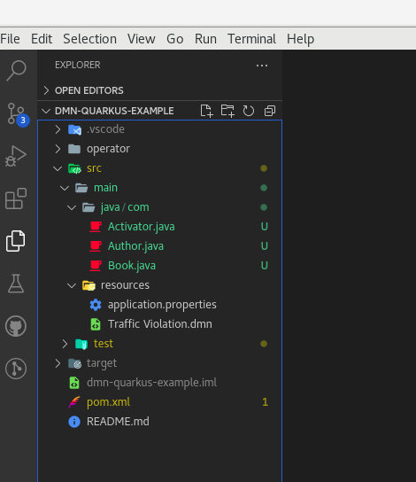
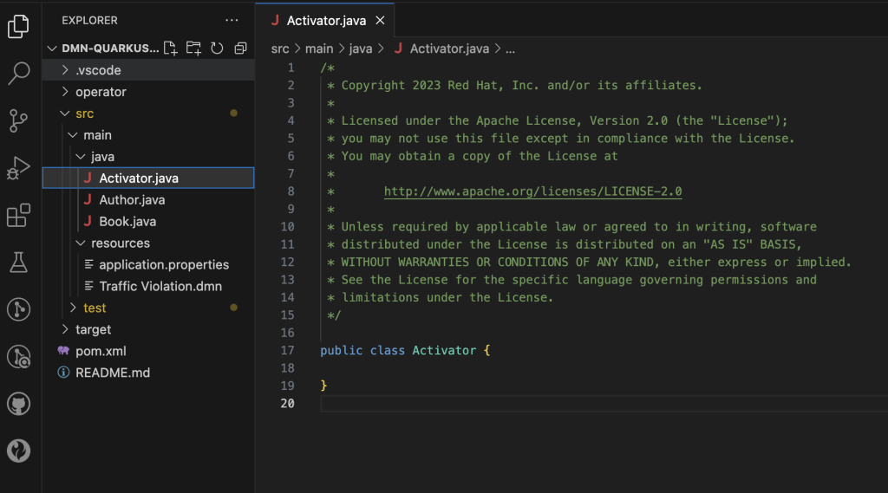
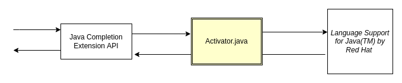
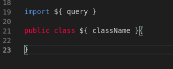
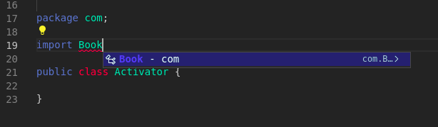
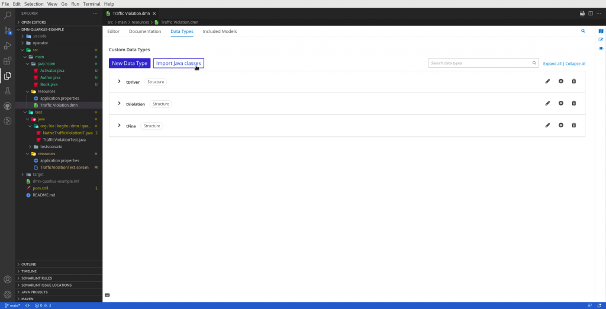
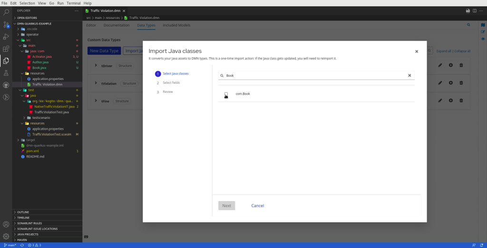
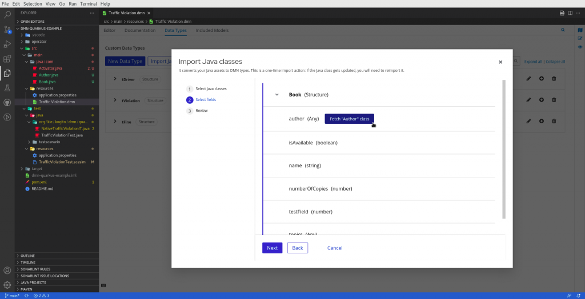
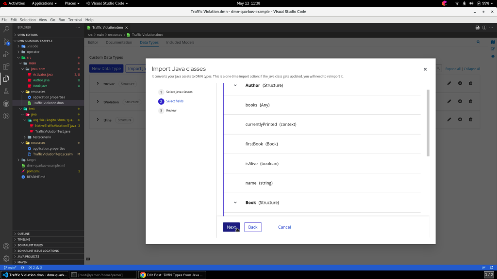
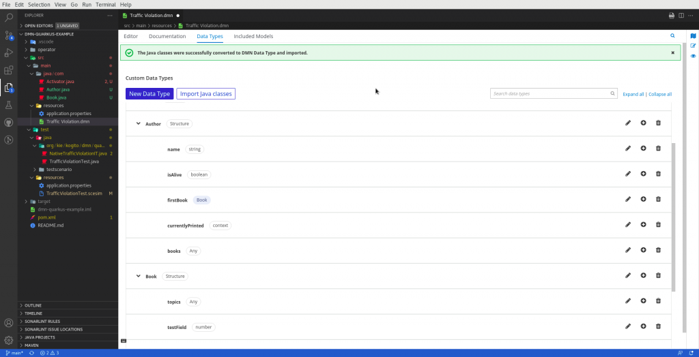

DMN Types from Java Classes
Drawing a real case DMN asset may become a time-consuming activity. In some domains, the possible types involved in DMN logic can explode into dozens or even hundreds of possible involved objects.
Although a well-designed UI can support users to define your domain object type in a simpler and faster way possible, other alternative strategies are a practical choice for the designer, in cases where a large domain is in place.
This is one of the reasons, we designed and implemented a new feature in the DMN Editor: Importing Java Beans and translating them as DMN Type.
Suppose you are a regular reader of the KIE Blog. In that case, you should already know our tooling editors offer developer-centric features, which place the developer in the center of the feature experience. In a few words, the scope of this goal relies on task automation, testing management, and reuse.
The Import of Java Classes feature is one of these kinds of functionalities, and in detail:
- Reducing time to define your DMN assets: A developer can write hundred of Java classes faster than defining them in the UI;
- Domain usage: In some cases, your domain can be already available and well defined with Java Classes
- Class management and Type safety: The enablement of the feature, the actual classes you can import into your project, and the type safety of your assets are manageable aspects the user can rely on.
In this post, we will guide you in using this new feature!
Tutorial
Here are the required elements for this guide:
- VSCode (1.66.0+);
- KIE Kogito Bundle or KIE Business Automation Bundle or DMN Editor plugin (0.30.0+);
- Language Support for Java(TM) by Red Hat (1.19.0+);
- Your domain’s Java Beans;
- The Activator, a Java class file (Activator.java) required to activate the functionality;
However, I strongly suggest using the latest versions of the above elements.
Project Setup
Let’s start laying the foundation of our project. Let’s consider a Kogito-based project present in our kogito-examples repository. Our pick-up is the dmn-quarkus-example, which already contains DMN assets. So, clone that module in your local. The next step is to add some Java Bean classes, which describe your own domain. In our case, we will use Book and Author classes.

An important point to highlight is your Java Classes must be Java Beans and, in detail, they must have public getters of their internal fields. This means if a field of your Java Class is private or without a public getter method, our functionality will be not able to find that field. An alternative is to set that field with the public identifier, but we strongly recommend referring to the Java Beans specification to use this feature.
The second point to analyze is the required Activator Class. This is a class named "Activator.java" and it’s mandatory for the correct behavior of the functionality. In the following paragraph, we’ll elaborate more on this class’s aim.

The Activator class must be composed exactly in that way, an empty Java Class exactly named "Activator.java". Any change or additional code can affect negatively the feature behavior.
Why are these requisites mandatory? Let’s go deeper to see how it works under the hood.
The Java Completion Extension
In the last months, we designed and implemented an extension of Language Support for Java(TM) by Red Hat VSCode plugin. As you can imagine, the main aim of that plugin is to provide language support for Java class files in VSCode. It provides, for instance, the Code completion feature when a user starts to type a Class in the editor.
Our extension leverages that plugin and that Code Completion feature to retrieve Java Classes names and field names and eventually translated them to DMN types.

In particular, the extension is composed by:
- An API Module: There are the entry points of our extension. Currently, the API offers two methods:
getClasses(query: String): Which returns a list of class names that match with a given query term.
(eg. Given “Boo” as a query parameter, a possible return list is["com.Book", "com.Boom", "com.Boomerang", .. ])- getAccessors(className: String): Which returns the fields of a given class
(eg. Given “Book” as a className parameter, a possible return list is[isAvaialble: boolean, author: com.Author, ...])
- The Activator Java Class file: This Java class is the place where we simulate a Code Completion request to be served by the Language Support for Java(TM) by Red Hat. For example, in the case of a
getClasses("Book")request, the activator will be dynamically filled according to this template:

Considering our example, that template is filled with the parameter shown in the below screenshot:

As you noticed, the Code Completion correctly suggests the Book class, and this represents the output of the API call too.
Please note that this logic doesn’t actually modify the user-defined Activator class file, but it simply sends a request using LSP protocol using the Eclipse JDT.LS library, which is implemented by the Language Support for Java(TM) by Red Hat.
Importing your Java Classes
At this point, we are ready to Import our Java classes as DMN Type, let’s start!
Open your DMN model, in our case our reference is the TrafficViolation.dmn file already available in the example project. Go to the "Data Types" tab. Here, you should notice a new button, Import Java Classes.
Be aware that this button is enabled only if the previously described requirements are satisfied.

After pressing the button, a pop will appear. Here, you can start to type the name of the class you need to import as DMN type. Let’s type "Book".

As a result of the query (and of the Code Completion behind the scenes), you should see the com.Book class as the query result. Select it and press the "Next" button.

In this step, you should expect to see all the fields of the com.Book class, with their own DMN type (eg. Book is a structure, name a string, numberOfCopies a number) Let’s pay attention to the first field, author. That field type is another user-defined Java class, com.Author. If you want to import that class too, just press the "Fetch "Author" class".

As a result, both com.Author and com.Book classes with their own fields are present in the list. Note that author field’s type is now Author.
Time to land on the last step, the review one. Here, we should simply review if the selected classes are consistent with our expectations. We are definitely ready to import these DMN Type, so press the "Import" straightaway!

And voila! com.Author and com.Book Java classes have been translated to Author and Book DMN types, ready to be used in your DMN logic.
Conclusion
In this article, we showed how to use our new "Import Java Classes" feature to import your domain Java classes as DMN Types, a useful alternative to importing your domain types.
You can find the full example in this repository
Thank you for reading!